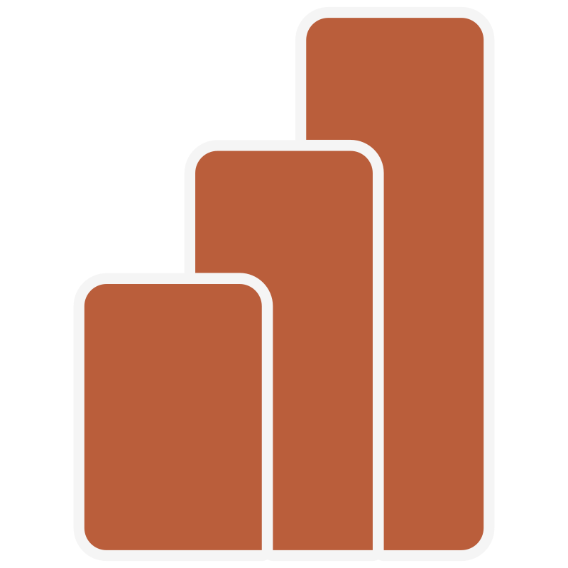
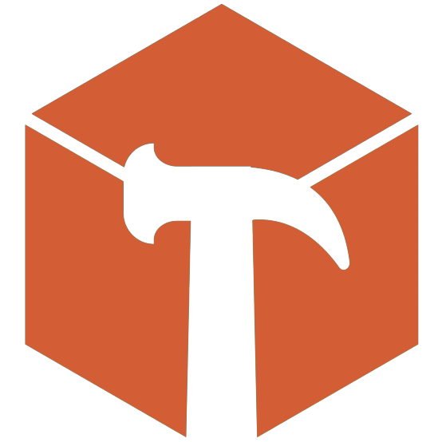
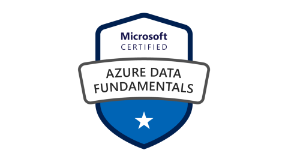

Vinícius Silva
Olá! Eu sou Vinícius, engenheiro de produção, graduado pela Universidade Federal do Oeste da Bahia. Desde 2020, venho trilhando meu caminho no mundo dos dados. Minha jornada envolve a combinação entre minha formação sólida em engenharia de produção e minha paixão enraizada por tecnologia. Ao longo dos anos, concentrei meus esforços na área de Data Science, explorando diversas vertentes, desde a análise de dados até o universo do Business Intelligence. Tenho dedicado bastante tempo aos estudos para me tornar um Cientista de Dados.
Projetos que participei
Aqui está um resumo dos projetos em que participei enquanto bolsista de pesquisa na faculdade! O projeto se chama Rede Data Science Br e tem como principal cliente, até hoje, o Ministério da Educação (MEC). Eu era um aluno pesquisador em Ciência de Dados e estava sempre colaborando com outros pesquisadores espalhados pelo Brasil.
Artigos
Inserindo dados de um arquivo csv para uma tabela em um banco de dados remoto (em nuvem) utilizando Python
Ver artigo
Otimizando a transformação de grandes volumes de dados no Power BI
Ver artigoEditando a expressão ou nome de várias medidas usando Tabular Editor
Ver artigoHabilidades
-

POWER BI
-
DAX STUDIO
-

TABULAR EDITOR
-
POSTGRESQL
-

MYSQL
-

PENTAHO
-
APACHE HOP
-
DOCKER
-
GIT
-
APIs
-
FIGMA
-
COREL DRAW
-

ILLUSTRATOR
-
PHOTOSHOP
- Proficiente em análise exploratória de dados, manipulação de dados, limpeza e transformação usando ferramentas como Power Query (linguagem M), Python, Pandas e SQL;
- Criação e administração de bancos de dados, abrangendo modelagem, implementação e otimização. Experiência em design de esquemas e normalização;
- ETL e Pipelines de Dados com Python;
- Automatização de processos e webscrapping utilizando Python;
- Versionamento utilizando Git/GitHub;
- Utilização de VPS, conhecimento de APIs e microgerenciamento de serviços utilizando Docker;
- UX e Storytelling.
Educação
Universidade Federal do Oeste da Bahia (UFOB)
Experiência
Analista de Business Intelligence
Analista de Dados
Pesquisador em Ciência de Dados
Estagiário no setor de Utilidades
Certificações
-
